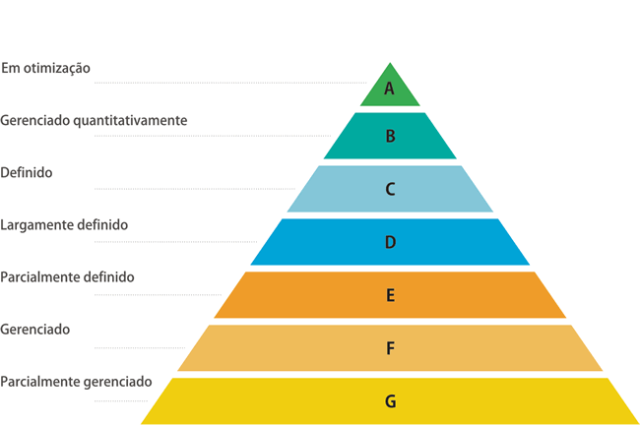

O que é MPS.br?
Iniciado pela SOFTEX, o programa MPS.br (Melhoria de Processo do Software Brasileiro) é uma iniciativa que visa aprimorar a capacidade de empresas de software no Brasil, adaptando e simplificando práticas de modelos internacionais como o CMMI para o contexto e a realidade do mercado brasileiro.
Os 7 Níveis de Maturidade do MPS.br
O MPS.br possui uma escala de 7 níveis de maturidade, que vão do Nível G (o mais baixo) ao Nível A (o mais alto).
Nível G: Em execução
A organização tem processos de gerência de projetos e de requisitos. As atividades são baseadas na intuição e não em processos formais.
Nível F: Parcialmente Gerenciado
Os projetos são planejados e executados. Há um controle básico sobre a gerência de projetos, mas ainda de forma reativa.
Nível E: Gerenciado
A empresa tem processos de gerência de projetos e de requisitos bem definidos e gerenciados de forma previsível. O foco é na gestão do projeto individual.
Nível D: Parcialmente Definido
Os processos básicos são definidos e padronizados para toda a organização. Há uma maior previsibilidade na execução dos projetos.
Nível C: Definido
A organização possui processos definidos, mas a melhoria contínua é um ponto de foco. Os processos são estabelecidos para toda a empresa.
Nível B: Gerenciado Quantitativamente
O desempenho dos processos é controlado por dados e métricas, permitindo uma gestão quantitativa e previsível do trabalho.
Nível A: Em Otimização
O foco principal é na melhoria contínua e na inovação, buscando constantemente otimizar os processos para alcançar a excelência.